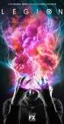

Legion
Stephen Klancher
...has seen 19
...has seen 0.3 hours
...has not seen 0.1 hours

Timeline
Most Recent:
Chapter 19
First Unseen:
Chapter 20 (# 20)
...has seen 19
...has seen 0.3 hours
...has not seen 0.1 hours
Timeline
Most Recent:
Chapter 19
First Unseen:
Chapter 20 (# 20)
